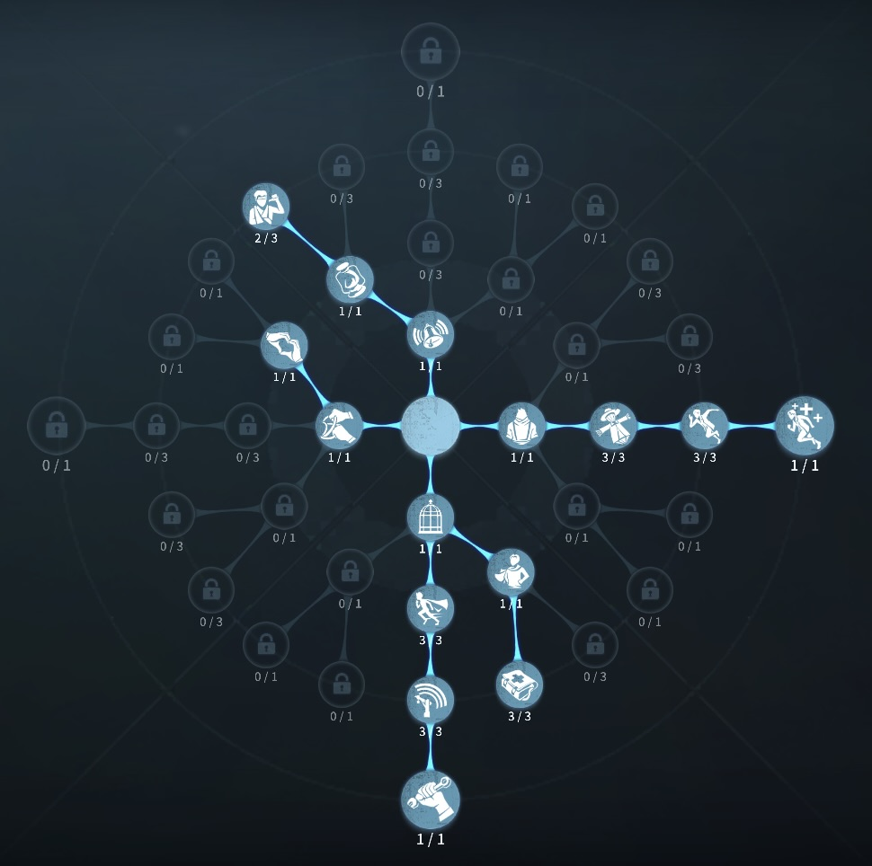
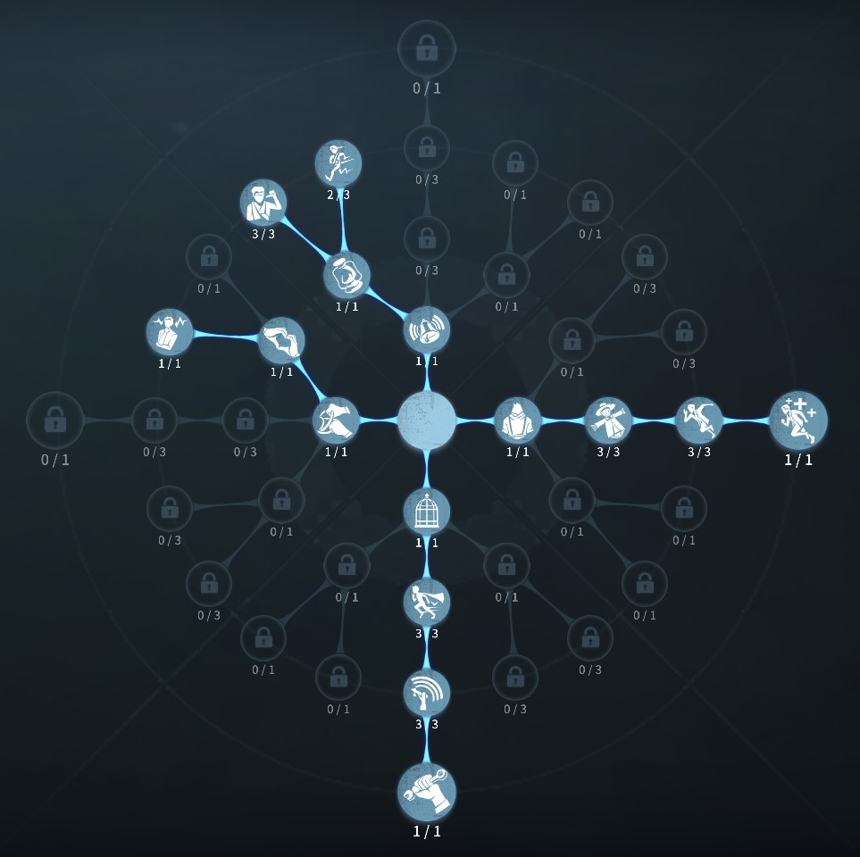

傭兵の評価
肘あてと頑強によるTOP救助職
外在特質と特徴
特質1:ダッシュ
・傭兵は肘あてを3つ持っており、膝あてを使うことで壁にぶつかるとスティックの向きに15m分ダッシュする特質2:長期訓練
・板窓の操作10％上昇。特質3:頑強
・ロケットチェアの発射速度が10％低下。・ダメージが8秒遅れて反映される。しかし、2ダメージ以上のダメージになると即ダウンする。
特質4:戦争後遺症
・解読速度25％低下。傭兵が編成に1人増えるたびに10％低下最大55％。 負傷するごとに治療に必要な時間が15％増加最大75％。特徴
救助時の頑強による恐怖の一撃への対応が可能肘あてによる無傷救助
遠くからの4割救助への安定感救助職でTOPを争うサバイバー
負傷を負っても2回救助にいけるのも最強
肘あての上手さと救助質が重要
基本的な立ち回り方
1. 追われた時
傭兵を追う＝3人逃げの確率が高まるといっても過言ではありません。
そのくらい、ファーストチェイスには強い。
また、他のサバイバーと違い頑強という特質があるので、
傭兵の風船粘着が決まり、殴られたとしても頑強の時間ダウンしない。
もし、追われた時は肘あてを惜しみなく使ってください。最後の一個は通電後に残す。
やられても、椅子耐久10％もあるので追われ得です。
2. 追われない時
必ずと言っていいほど、一番に救助にいきます。
ある程度解読を進めたら、状況を見て、救助待機しよう。
救助後、治療をもらって再救助。
暗号機が回っていて通電見込みがある場合2回救助にいっても良い。
おすすめの内在人格
危機一髪治療型人格
この内在人格は、癒合と避難所を採用することで、治療をもらう時間に大幅な短縮をかけた人格

危機一髪万能型人格
この内在人格は、防衛本能を採用して救助後のDDを少しでも減らし、鵜化効果で解読速度を少し上げた人格


みんなのコメント